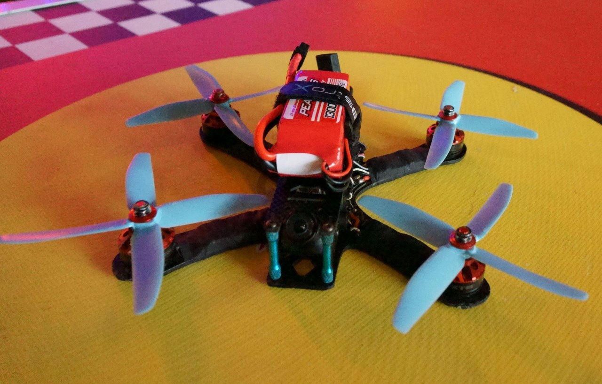
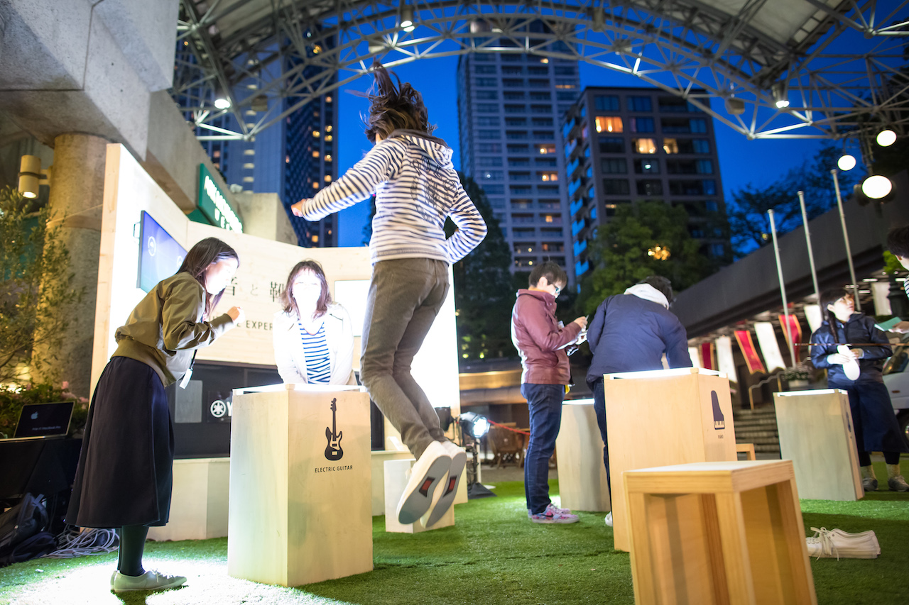
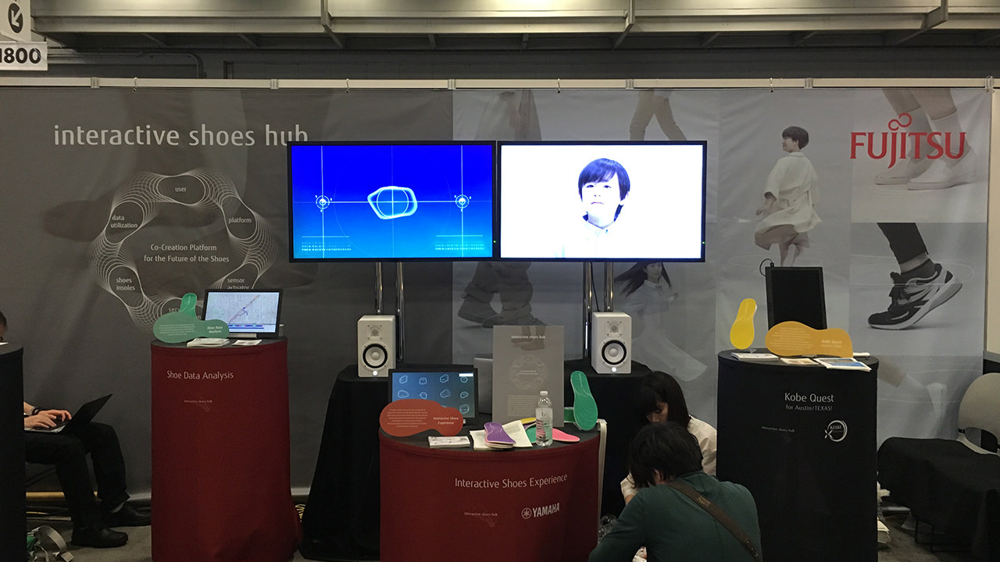
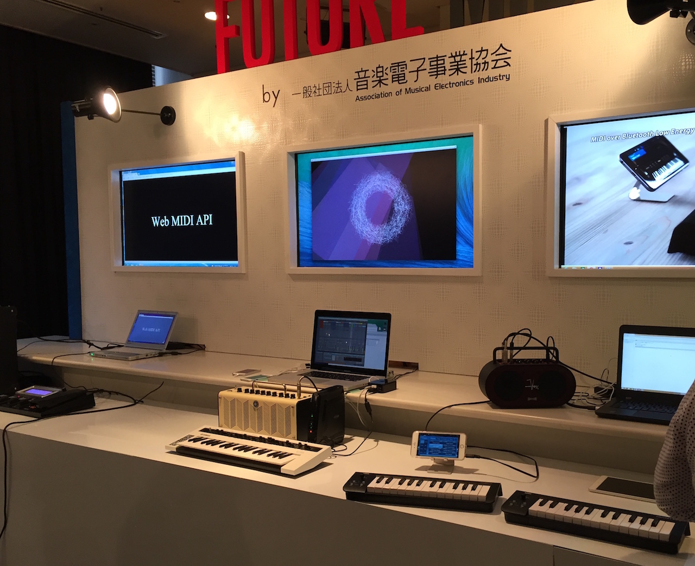

[予告]Maker Faire Tokyo 2016@東京ビックサイトに出展します！
2016/8/3 | Event
来る8/6-7に東京ビックサイトで開催されるMaker Faire Tokyoにて、Creators’ Hubを使った出展をヤマハ(株)が行います。
Maker Faire Tokyo特設ドローンレース場では、Creators’ Hubを用いて、ドローンレース演出を行います。ドローンの動きに音と光が連動する、今までにないドローンレースを是非、目撃してください！
ヤマハ(株)出展ブースでは、「あなたがCreators’ Hubにつなげたいもの」を募集しています。皆様の熱い想いをお待ちしております！
Ver0.1.0をリリースしました
2016/7/28 | Release
Ver0.1.0をリリースしました。
ソースコードはこちら、アプリはこちらからダウンロードしてください。

Sound and City@六本木アークヒルズ 2016/4/28-29
2016/4/30 | Event
Creators’ Hubとセンサー付きの靴（センサーシューズ）を繋いで開発した楽器演奏システムを、「未来の街と音」をテーマにしたイベント「SOUND ＆ CITY」に、富士通(株)とヤマハ(株)が共同出展しました。
この展示で靴の動き・音・照明を連動するためにCreators' Hubが使用されています。
富士通(株)が開発したセンサーシューズを履いて片足立ちやジャンプ、つま先立ちなどの動作を行うと、センサーの値をCreators’ Hubが変換することで、音楽が変化します。
簡単な体の動きでピアノやギター等の演奏が行えるため、多くの人たちに音楽を奏でる喜びを感じてもらえました。

SXSW@テキサス州オースティン 2016/3/13-16
2016/3/17 | Event
Creators’ Hubとセンサー付きの靴（センサーシューズ）を繋いで開発したモーションフィードバックシステムを、世界最大のクリエイティブ・ビジネス・フェスティバル「SXSW」に富士通(株)とヤマハ(株)が共同出展しました。
この展示で靴の動きに音を連動するためにCreators' Hubが使用されています。
富士通(株)が開発したセンサーシューズで感知した動きや姿勢を音と映像を用いてフィードバックすることで、今まで気づかなかった自身の動きに気づき、感覚が拡張される体験をしてもらいました。

ThinkMIDI@ラフォーレミュージアム六本木 2015/12/12-13
2015/12/14 | Event
「電子楽器」「映像」「スマートフォンで操作できるブラウザアプリ」を繋いだシステムを「Think MIDI 2015 ～MIDIがつなぐ時代と音楽～」に出展しました。
Creators' Hubを使用して、MIDI、OSC、WebSocketを相互変換することで、音楽と、映像・webをつなぎ、MIDIの新しい拡張性を感じてもらうことができました。